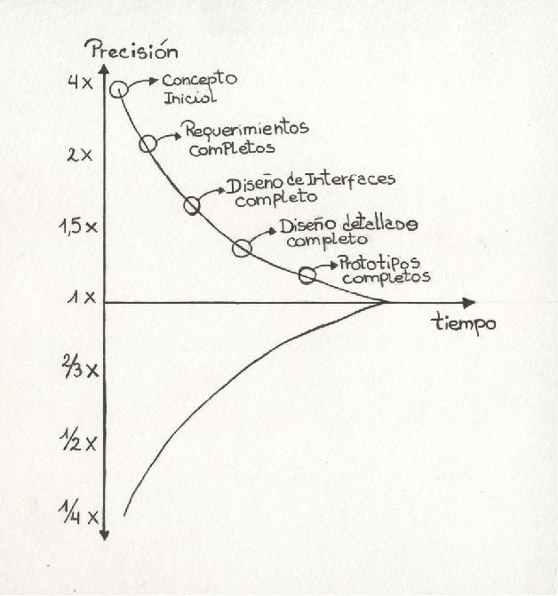
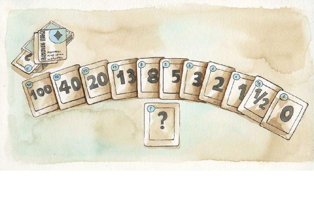

Estimar no es predecir
La estimación en los proyectos de software siempre ha sido una cuestión de debate. Incluso existe un libro llamado Estimación de Software: desmitificando el arte negro13 [Mc Connell 2006]. Han sido propuestos diversos métodos de estimación con distintos niveles de formalidad, pero ninguno ha logrado imponerse con claridad.
En este capítulo veremos la forma en que los métodos ágiles encaran esta temática junto con algunas de las técnicas más populares. No se pretende hacer una revisión de las teorías y técnicas de estimación, sino hacer un breve repaso de algunos puntos y sí destacar y ahondar en los puntos en los que los métodos ágiles aportan una visión distinta.
Cuestiones generales de estimación
Para qué estimar
Es necesario para poder planificar. En primer lugar, el cliente necesita saber cuándo tendrá el producto y cuanto costará. El área de infraestructura necesita saber para cuando preparar el ambiente necesario para su puesta en producción. El equipo necesita saber cuando terminará el proyecto para comenzar el siguiente. Y así, cada interesado en el proyecto necesita cierta visibilidad para organizar sus tareas.
Cuándo estimar
Uno de los factores que más influye al estimar proyectos de software es el conocimiento que uno tiene del dominio del negocio y de las herramientas que utilizará para la construcción. Esto se ve claramente en el famoso cono de incertidumbre de Barry Boehm (figura 4.1), el cual nos indica que la incertidumbre disminuye a medida que avanzamos en el proyecto, dado que cada vez es mayor el conocimiento que el equipo tiene del negocio y de su propio funcionamiento. Es por esto que resulta razonable estimar a medida que se avanza en el proyecto.
Figura 4.1. Cono de incertidumbre: en el eje vertical se muestra el nivel de incertidumbre del equipo de proyecto mientras que el eje horizontal representa la dimensión temporal. A medida que transcurre el proyecto, el equipo aumenta su conocimiento y el nivel de incertidumbre decrece.

Puntualmente, tendremos dos momentos distintos de estimación con dos objetivos distintos14.
En un primer momento realizaremos una estimación inicial o de orden de magnitud. Esta estimación la haremos antes de empezar el proyecto, durante la etapa de preventa o inicio de proyecto si quisiéramos ponerlo en términos del Proceso Unificado. A esta altura, el cliente tiene una visión del proyecto, pero no todos los detalles. Para seguir adelante necesita cierta información de nuestra parte: tiempo que tomará el desarrollo y los costos. Es en este contexto que realizaremos nuestra primera estimación para, entre otras cosas, saber si estamos hablando de un proyecto de 3 meses o 2 años.
El segundo momento será al comienzo de cada iteración. Estas estimaciones periódicas, se realizan en un contexto diferente al anterior: ya tendremos más información, estaremos cada vez más familiarizados con el dominio del problema y con la tecnología y, tal como indica el cono de incertidumbre, nuestra probabilidad de error será cada vez menor. El objetivo de esta estimación es distinto: la primera fue para determinar un orden de magnitud del proyecto, mientras que esta es para que el equipo pueda asumir un compromiso de los ítems que entregará al final de la iteración actual.
Quién estima
Dependiendo de la técnica de estimación que se utilice, el encargado puede variar. En el caso de las utilizadas en entornos ágiles, la propuesta es que la realicen los miembros del equipo que realizarán el desarrollo. Esto se basa en la simple idea que resulta poco lógico que alguien tome un compromiso en base a una estimación realizada por un tercero.
Quién estima
Dependiendo de la técnica de estimación que se utilice, el encargado puede variar. En el caso de las utilizadas en entornos ágiles, la propuesta es que la realicen los miembros del equipo que realizarán el desarrollo. Esto se basa en la simple idea que resulta poco lógico que alguien tome un compromiso en base a una estimación realizada por un tercero.
Estimaciones en el enfoque ágil
Siendo conscientes de la situación evidenciada por el cono de incertidumbre previamente mencionado, resulta evidente que no tiene sentido utilizar escalas de estimación muy precisas. Es por esto que al trabajar con métodos ágiles suelen utilizarse ciertas escalas de estimación predeterminadas. Las dos escalas más comunes son los “talles de camiseta” y los valores de la serie de Fibonacci [Cohn 2006].
• Talles de camiseta: chico, medio, grande, extragrande.
• Fibonacci15: 1, 2, 3, 5, 8, 13, 21, …
El uso de una u otra depende del nivel de abstracción de la estimación. En una estimación en etapa de pre-proyecto (pre-venta) resulta perfectamente lógico estimar con talles de camiseta, mientras que en una de comienzo de iteración, puede resultar más conveniente utilizar la serie de Fibonacci. Al mismo tiempo, como veremos más adelante, suele recomendarse el uso de unidades de estimación abstractas [Shore 2007].
Estimación != planificación
Como ya dijimos, uno de los objetivos de la estimación es la planificación. Lamentablemente esto suele ocasionar infinidad de problemas: el equipo da una determinada estimación para un conjunto de actividades y automáticamente algún gerente convierte esa estimación en un compromiso y arma todo un plan de proyecto en base ello.
No olvidemos que la estimación solo nos da una idea de lo que nos puede insumir cierta actividad, pero bajo ningún punto de vista representa un compromiso de parte del equipo. Volveremos sobre este tema en el capítulo siguiente dedicado a cuestiones de planificación.
Estimación y diseño
El proceso de estimación implica establecer ciertos supuestos al respecto de cómo se construirá el software. Dichos supuestos muchas veces involucran cuestiones de diseño de alto nivel que podrían tener una gran influencia en la estimación. Un ejemplo de esto, muy común en estos días, son los reportes: es radicalmente distinto tener que programar todos los reportes manualmente frente a usar librerías como Crystal16 o Jasper17 o incluso utilizar un servicio como el de Google Analytics18. Por esto es que a la hora de estimar, puede que el equipo lo haga asumiendo una estrategia en particular, ya que el uso de una u otra estrategia podría implicar variaciones en el orden de magnitud de la estimación.
Story points
Para medir el tamaño del software en el desarrollo ágil se suelen usar story points. Son una medida de tamaño relativo, ya que al estimar con story points lo importante no son los valores puntuales de cada ítem, sino los relativos de los mismos. Cuando decimos que un ítem dado tiene tamaño de un story point y otro de dos, estamos diciendo que el segundo es el doble de grande que el primero. Dada esta importancia del valor relativo, muchas veces a la hora de estimar se comienza por identificar el ítem de menor tamaño y tomarlo como unidad de estimación, para luego estimar el resto en base a la unidad establecida.
El uso de estas unidades no convencionales está en cierto modo sustentada por la intención de utilizar unidades que no sean traducibles a tiempo, pues nunca faltan los “entrometidos” que pretenden llevar la estimación del equipo a un compromiso de calendario. La estimación es un proceso de entendimiento, previo y necesario para la planificación. Insistimos, bajo ningún punto de vista la estimación es un compromiso. De lo uno a lo otro hay varias cuestiones intermedias.
Días ideales
Para entender lo que significa la medida en días ideales tomemos el ejemplo de un viaje en la ciudad. Pensemos que tenemos que manejar desde un punto A a un punto B, ¿cuánto tiempo nos llevaría esa travesía? Es algo incierto, pues hay una cantidad importante de factores (un accidente o un desvío) que podrían influir. Pero si pudiéramos desestimar todos esos factores y conociéramos la distancia entre los dos puntos, podríamos suponer una velocidad promedio y así calcular el tiempo que nos insumiría la travesía. El tiempo insumido por esta travesía “perfecta”, sin interrupciones, es tiempo ideal.
Muchas veces al comenzar a trabajar con el enfoque ágil, los equipos suelen preferir utilizar días ideales, pues les resultan mucho menos abstractos que los story points.
Spikes
Al trabajar en desarrollo de software puede que nos encontremos con tareas que nunca antes hemos realizado como, por ejemplo, utilizar un determinado componente, interactuar con una determinado servicio, etc. Esta falta de experiencia/conocimiento nos hace imposible que estimemos el tiempo de realización. En estos casos, el enfoque ágil es hacer un spike.
Básicamente, es una tarea que se hace para despejar incertidumbre sobre otra tarea. En concreto: si una user story requiere interactuar con un componente de hardware vía interface bluetooth, siendo esto algo que nunca hemos hecho, entonces no podremos estimar la user story y haremos un spike.
En sí, el spike es una tarea de investigación o experimentación. Es importante no perder de vista el objetivo: obtener el conocimiento necesario para poder estimar la tarea/user story que dio origen al spike.
Una característica importante de todo spike, es que es time-boxed, pues si no lo fuera, uno podría está “infinitamente” investigando un tema. Otra cuestión recomendada es definir un entregable como resultado del spike, que podría ser un fragmento de código que muestre cómo utilizar el componente que se investigó o una respuesta concreta a la pregunta que planteó el spike. Más allá de esto, el principal resultado debe ser la capacidad de poder estimar la tarea que le dio origen.
Técnicas de estimación
Existen diversas clasificaciones de los métodos de estimación, pero de forma simplificada podemos clasificar las técnicas de estimación en dos grandes grupos: las paramétricas y las basadas en opiniones.
En líneas generales, podemos decir que las técnicas paramétricas proponen algoritmos que, tomando como entrada distintos parámetros del proyecto (complejidad, conteo de entradas, conteo de salidas, experiencia de los miembros del equipo, prácticas de programación utilizadas, etc.), proveen una estimación del esfuerzo requerido para completar el proyecto.
Por su parte, las técnicas basadas en opiniones, como su nombre lo indica, dependen de la opinión de personas. En la bibliografía, estas técnicas suelen denominarse “basadas en expertos”, pues la idea es que las personas que estiman sean los expertos. Pero como en la práctica esto no siempre se cumple, hemos decido denominarlas técnicas basadas en opiniones. Una de las más populares de este grupo es la conocida con el nombre de Delphi, la cual ha dado origen a una serie de variantes entre las que se destaca la denominada Wideband Delphi, desarrollada por Boehm y Farquhar en la década de 1970 y popularizada luego en el libro Software Engineering Economics [Boehm 1981].
Las técnicas de estimación ágil pertenecen al grupo de técnicas basadas en opiniones.
Planning poker
Posiblemente es la técnica de estimación más difundida en ambientes ágiles. Lo primero que debemos notar es que si bien su nombre hace referencia a planificación, la misma es sólo una técnica para organizar una sesión de estimación y no cubre cuestiones de planificación.
Antes de entrar en el detalle de la dinámica dejemos en claro algunas cuestiones de contexto:
• El objetivo de esta técnica es consensuar una estimación de tamaño o esfuerzo sobre un conjunto de ítems que generalmente son user stories.
• Los estimadores son los miembros del equipo de desarrollo.
• Es indispensable la participación del responsable de producto.
Para utilizar esta técnica son necesarios dos artefactos. El primero es el conjunto de story cards a estimar y el segundo es un mazo de cartas de planning poker para cada estimador. Cada una de las cartas del mazo tiene un valor dictado por la escala de estimación a utilizar. Como se mencionó anteriormente, la escala más utilizada es la dada por los valores de la serie de Fibonacci.
Al igual que todas las técnicas de estimación basadas en opiniones, es necesario que, antes de comenzar, los estimadores acuerden algunas generalidades y pongan en claro cualquier suposición preliminar como ser: unidad de estimación (¿story points o días ideales?), tecnología19 a utilizar, el alcance de la estimación (¿estamos estimando el esfuerzo de análisis e implementación o también el de la prueba y la aprobación?), etc.
Figura 4.2. Cartas utilizadas para hacer Planning Poker.

Uno de los participantes toma el rol de moderador, generalmente el responsable de producto, pero podría ser cualquiera. Este moderador toma una story card y la lee en voz alta. Los estimadores escuchan y realizan preguntas para despejar dudas, las cuales son contestadas por el responsable de producto. Es común que durante este intercambio de preguntas-respuestas, surjan las condiciones de aceptación de la user story, las cuales son anotadas al reverso de la story card20.
Una vez que se han contestado todas las preguntas, cada estimador elige en forma privada la carta de su mazo que representa su estimación. Cuando todos han elegido su carta, cada uno exhibe la suya simultáneamente con los demás. De esta forma se busca evitar que la opinión de un estimador influya en el resto. Con las cartas dadas vuelta sobre la mesa se analiza la situación. Si todos los estimadores han dado el mismo valor, podemos dar por terminada la ronda: se toma ese valor como estimación, se lo anota en la story card y se pasa a la siguiente. En caso que haya diferencias, el estimador de la estimación más alta y el de la más baja discuten sus diferencias, no para intentar convencer el uno al otro, sino para intentar encontrar distintas interpretaciones de la story que pudieran ser la causa de la diferencia. Esta discusión debería arrojar más información, alineando las distintas interpretaciones. A la luz de la nueva interpretación, se repite el proceso: cada estimador vuelve a elegir un valor en forma privada y luego se comparten los valores elegidos. El proceso se repite hasta que el valor elegido es el mismo para todos los estimadores. No es habitual que se requieran más de tres rondas.
¿Y si luego de las tres rondas sigue habiendo divergencia en las estimaciones? Para resolver esta situación es importante no perder el foco. La estimación establecida debe ser consensuada entre todos, pues en una instancia posterior serán esos estimadores los que deberán asumir un compromiso. Imaginemos la siguiente situación: con el fin de cerrar la estimación de un ítem luego de varias rondas, podríamos tomar un promedio de los valores extremos dados por los estimadores. Aquellos que hayan dado una estimación por debajo del valor promedio, seguramente se sentirán cómodos. ¿Pero qué hay de aquel cuya estimación está por encima?, ¿se sentirá cómodo?, ¿podrá esa persona, en una instancia posterior, asumir un compromiso basado en una estimación más optimista que la suya? Para evitar este tipo de situaciones hay distintos enfoques, de los cuales sólo describiremos dos:
• Tomar el valor más alto, pues de esta forma todos los estimadores estarán en condiciones de asumir un compromiso posterior.
• Si estamos en una estimación de iteración, adelantarse en el tiempo y pensar ya en el momento del compromiso, entonces se toma la estimación de la persona que asumirá el compromiso del ítem.
En resumen
En este capítulo hemos visto el enfoque de los métodos ágiles para la estimación en proyectos de software. Se presentaron algunas técnicas y los artefactos más utilizados.
Resulta interesante destacar que algunas de las cuestiones presentadas son aplicables, incluso a contextos más allá del desarrollo de software.
Puede que, a pesar de las explicaciones, el lector aun desconfíe de la efectividad y/o utilidad de las técnicas, pero antes de hacer un juicio es necesario ver como se articulan con las técnicas de planificación y manejo de cambios, dos cuestiones que veremos en próximos capítulos.
13 Software Estimation: Demystifying the Black Art.
14 Dependiendo del tamaño y tipo de proyecto, puede haber más instancias de estimación. En general hay, al menos, dos como las aquí mencionadas.
15 La serie de Fibonacci se define como f(n) = f(n-1) + f(n-2), con f(1) = 1 y f(0)=1. El uso de esta serie se debe a que sus valores representan saltos razonables de orden de magnitud.
19 Decimos tecnología en sentido amplio, lo cual incluye lenguaje, framework, etc.
20 Anotar las condiciones de aceptación al reverso de la story card no es una práctica del Planning Poker, sino que es una práctica muy aceptada en el ambiente ágil. Para más información al respecto consultar la sección User Stories en el capítulo “Delineando el alcance”.